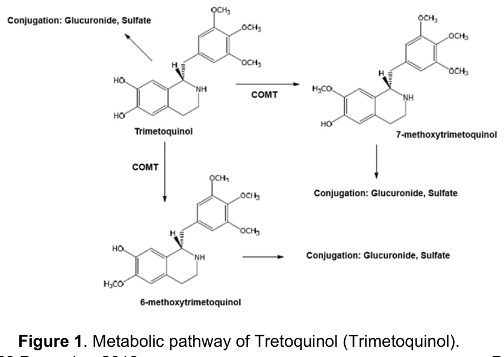

Technical Letters · TL16 (replaces TL2018/05)
Edition v2.0, 2018 (version 2.0) · effective 20 December 2018 · superseded
Retrieved on 25 November 2026 from https://www.wada-ama.org/sites/default/files/resources/files/tl16_tretoquinol.pdf
Editions: v3.0, 2021 (current) · v2.0, 2018
p. 1
TRETOQUINOL
*The approval by the WADA Executive Committee is applicable only to Technical Letters issued after November 2019.
The World Anti-Doping Agency wishes to draw the attention of the Laboratories to the following issue that may affect Laboratory operations. This pertains, in particular, to the detection and reporting of Tretoquinol [Trimetoquinol; 1-(3',4',5'-trimethoxybenzyl)-6,7-dihydroxy-1,2,3,4-tetrahydroisoquinoline] in urine Samples.
Tretoquinol is a non-selective beta-2 agonist, which has been explicitly listed as an example of prohibited beta-2 agonists under class S3 of the 2019 Prohibited List. Tretoquinol is used therapeutically for the treatment of asthma (sold as Inolin ® in some Asian countries) and is also used as an ingredient of over-the-counter (OTC) cold and flu medications.
Studies on Tretoquinol metabolism1, 2 have shown that it is excreted in urine either as free form (minor) or phase-II conjugates (glucuronide and sulfate); in addition, Tretoquinol is metabolized by catechol-O-methyl transferase (COMT) into 6- and 7-methoxytetroquinol, which are also excreted in urine either unchanged or after phase-II conjugation (Figure 1). However, not much has been published about the kinetics of urinary excretion of Tretoquinol or its Metabolites and, therefore, there has been no information available about the expected urinary concentrations after administration.
A recent study performed by the Tokyo WADA-accredited Laboratory, in which volunteers were administered 6 mg of oral Tretoquinol hydrochloride hydrate (as per manufacturer's recommendations) has helped shed light on the excretion kinetics and provides the basis for this initial recommendation for a conservative reporting limit for Tretoquinol (free plus glucuronide conjugate) as outlined below. These recommendations are provided to avoid the reporting of an Adverse Analytical Finding for Tretoquinol, which may have resulted from the inadvertent use of Tretoquinol-containing OTC medications before the coming into effect of the 2019 Prohibited List (1 January 2019).

Figure 1. Metabolic pathway of Tretoquinol (Trimetoquinol).
p. 2
*The approval by the WADA Executive Committee is applicable only to Technical Letters issued after November 2019.
WADA recommends the following in regard to the analysis and reporting of Tretoquinol findings, starting in 2019:
- Laboratories shall target the analysis of the Tretoquinol parent compound and its glucuronoconjugated Metabolite only, following urine enzymatic hydrolysis with β-glucuronidase (from E. Coli);
- Report findings for Tretoquinol as Adverse Analytical Findings in ADAMS only when the following conditions are met:
- The Sample has been collected after 15 January 2019;
- The total estimated concentration of Tretoquinol (free + glucuronidated conjugate) is higher than 20 ng/mL.
In order to assess the prevalence of Tretoquinol use, Laboratories are also requested to record all samples, which contain Tretoquinol at levels below the recommended 20 ng/mL reporting limit, and report such findings to WADA, upon request, at the beginning of 2020.
Should you have any further questions, please do not hesitate to contact the WADA Science Department.
Retrieved on 25 November 2026 from https://www.wada-ama.org/sites/default/files/resources/files/tl16_tretoquinol.pdf